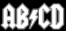

De: La Frikipedia, la enciclopedia extremadamente seria.
De: La Frikipedia, la enciclopedia extremadamente seria. De: La Frikipedia, la enciclopedia extremadamente seria.
| De la serie el abecedario es fácil: | |||
| ☃ | |||
| |||
| ¿Cómo se representa? | pos...: ☃ | ||
| Sonido | /☃/ | ||
| Idioma en que se usa | Gñapés | ||
| Forma | De muñequito de nieve | ||
| Usos | Gñapear | ||
| Dificultad de escritura | Ninguna | ||
| Dificultad de pronunciación | Ninguna, si tienes cuerdas de piano en vez de cuerdas bucales | ||
| ¿Es común? | Mucho | ||
| Notas | ¿Alguien ha perdido su muñequito de nieve? | ||

Extraño símbolo usado únicamente en el Gñap cuyo sonido es más o menos... /☃/ o lo que es lo mismo gñap (anda que también se comieron la cabeza pensando el nombre del idioma).
Decir gñap y hablar gñapés... ¿Qué más quieres? ¿Una lista de trescientos usos?
☃gpfs arsplrs ☃rsp arñsfsppasr gñarpfs añrspsrs rñprprsgs
Pues según fuentes fidedignas no se sabe si fue primero el gñap o el ☃ pero lo que es seguro es que yo soy yo, tú eres tú eso del suelo no es un condón roto.
|  |
| Letras |
| D • F • G • J • N Q • R • S • T • W • Y • Z |
| Símbolos |
| ← • → • ☃ • 蛋 • ☂ • இ • ټ • # • ? |
Autor(es):